Cybersecurity automation and AI-assisted security tooling
CSAL focuses on security automation and AI-assisted vulnerability management, building tooling that integrates with modern AI workflows to surface, triage, and remediate security findings at scale. Our work is open-source and oriented toward practitioners who operate in complex, heterogeneous environments.
Self-hosted MCP server that gives AI agents structured access to OpenVAS / Greenbone, with no telemetry and credential isolation between clients and the scanner. A thin bridge that returns raw scan data; analysis and reporting belong in the agent or a platform built on top.
CLI tool for auditing outbound network activity during test execution. Define what connections are allowed, run your tests, and get a clean pass/fail report. Makes unintended network behavior visible and enforceable in CI.
AI Automated Vulnerability Management. A platform that orchestrates vulnerability scans, processes results, prioritizes risks, and generates actionable tickets and reports. Focuses on the operational layer between vulnerability detection and remediation.